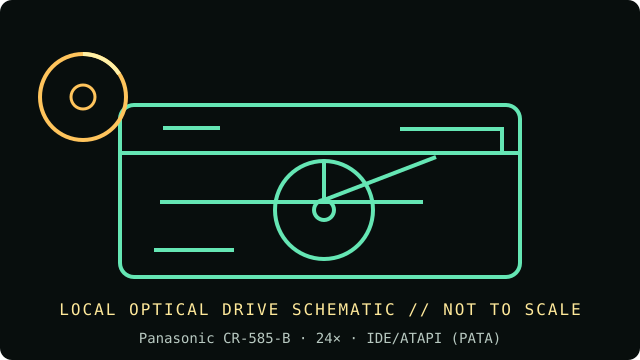

[ INDIVIDUAL COMPONENT // OPTICAL DRIVES ]
Panasonic CR-585-B
Internal 24× CD-ROM reader; model-specific CR-585-B unit, not a writer. Rated speed is a manufacturer class maximum, not a guaranteed sustained transfer rate. Verify the exact label and revision before acquisition or installation.

IDENTIFICATION: Panasonic CR-585-B · confirm the complete unit label, suffix/OEM number and revision; this reader-only record does not claim writing capability.
Documented specifications
| Catalog subcategory | CD-ROM readers |
|---|---|
| Exact product identifier | Panasonic CR-585-B |
| Era / product type | late-1990s internal CD-ROM reader |
| Media / read and write support | CD-DA, CD-ROM, CD-ROM XA, Photo CD, CD-I, Video CD, CD EXTRA, CD-R and CD-RW read; recording is not supported. |
| Rated read speed | 24× maximum CD-ROM read; peak rating, not a guaranteed sustained rate. No recording is supported. |
| Interface / mechanics | IDE/ATAPI (PATA); Internal 5.25-inch drive; confirm bay height, bezel and loading mechanism on the exact revision before fitting. |
| Host compatibility | Requires an IDE/ATAPI PATA host connection. Configure its master/slave/Cable Select jumper for the channel; modern SATA-only systems need a compatible bridge and suitable legacy-OS support. |
| Model distinction | The suffix -B is retained because Panasonic model suffixes identify distinct versions. |
Media and preservation notes
A CD-ROM reader is not a CD writer. Optical-disc condition, reflectivity, errors, firmware and host software all affect practical readability; a speed label alone cannot establish a successful preservation read.
- Inspect the disc for cracks, delamination or contamination before spinning; handle only by its edge or center hole.
- Record the exact model and firmware, host/controller, software, media type, retries and read/verification errors; retain a checksum-verified image and acquisition log.
- Store source media in protective cases in a clean, cool, dry and dark environment. Preserve an unmodified original and use verified copies for access.
Installation and compatibility checks
- Requires an IDE/ATAPI PATA host connection. Configure its master/slave/Cable Select jumper for the channel; modern SATA-only systems need a compatible bridge and suitable legacy-OS support.
- The suffix -B is retained because Panasonic model suffixes identify distinct versions.
- Compare the drive label and manual revision before applying speed, media or jumper claims; OEM variants may differ even when the front bezel is similar.
Documentation, standards and preservation references
- CR-585-B 24× CD-ROM drive card — connections and settingsModel card for the CR-585-B 24× IDE drive, including supported media and jumper settings.
- Internet Archive — Panasonic CD-ROM driversArchived driver package listing for legacy Panasonic CD-ROM devices; confirm the exact OEM/revision.
- Ecma International — ECMA-130 CD-ROM standardCD-ROM physical format reference; it does not certify a drive revision or guarantee every media read.
- NIST — Care and handling of CDs and DVDsOptical-media preservation guidance; not a drive-specific specification.
Model-specific formats and interface notes are based on the references listed above. Match those references to the complete unit label and revision; listed support does not guarantee a successful read from every aged or recordable disc.